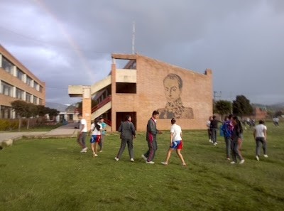
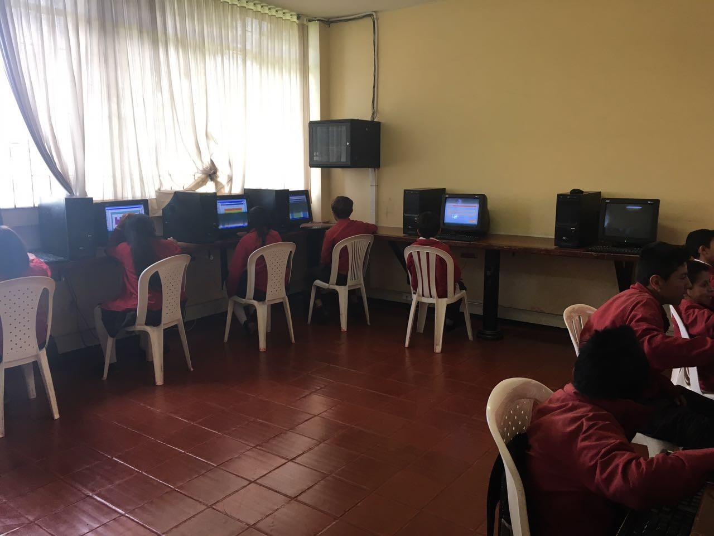

ESPECIALIDADES
En este apartado se dará a conocer información sobre cada una de las especialidades, dando una idea más clara sobre las opciones de estudio que ofrece la institución, se presentan 4 especialidades: Administración Deportiva; Administración y finanzas; Electrónica; Informática.
Durante los últimos años la institución ha adquirido un convenio con el SENA que beneficia a los estudiantes y a cada una de las especialidades, el convenio trae nuevos planes de estudios y nuevas competencias a desarrollar para tener un campo de mayor amplitud en dichas asignaturas.
ADMINSTRACION DEPORTIVA
En esta especialidad se manejan los procesos deportivos, los principales temas relacionados con administración deportiva son gestión y proyectos deportivos, gerencia deportiva y administración de instalaciones deportivas, gracias a sus múltiples profesores estos temas son didácticos y muy activos, el colegio se encarga de mantener sus zonas verdes donde se pueden complementar las actividades al aire libre.
Por Parte del SENA se complementan los temas anteriores y el tanto el SENA como los profesores hacen un uso excelente de las áreas deportivas que brinda nuestra institución involucrando a todo el plantel educativo así creando varios eventos de carácter deportivo y manteniendo activos a los estudiantes, no se tiene información sobre un proyecto final, pero se tienen en cuenta varios proyectos “eventos” a lo largo del año.
ADMINISTRACION Y FINANZAS
En esta especialidad se pueden encontrar diferentes métodos de estudio del comercio por parte del colegio, el colegio brinda una información a los estudiantes de su área (comercio) de alta calidad que ayudara en sus futuras carreras que estén relacionadas con lo anterior.
Por parte del SENA se intensifica el aprendizaje dando aun bases más actualizadas y un poco de trabajo más tipo universitario en el que se tiene una mayor cantidad de objetivos y actividades que fortalecen a los estudiantes en el área de comercio y finanzas, en esta especialidad no se encuentra un proyecto final como tal, pero si se tiene muy en cuenta todo lo aprendido durante sus dos años de estudios con el SENA.
Foto: encolombia.com
ELECTRONICA

En la especialidad de electrónica encontramos objetivos vasados en los circuitos, así como la robótica y el funcionamiento de varios aparatos innovadores, el colegio brinda una gran profundización en los aprendizajes de la electrónica desde sus bases hasta un proyecto final.
Por parte del SENA va de la mano con el cronograma de la especialidad y añadiendo cierto nivel de profesionalismo y que se interactúe mas con la propia especialidad, igual mente se tiene que presentar un proyecto en el que se aplique todo el conocimiento adquirido de sus dos años añadiendo objetivos en el producto que ayuden a la sociedad dando paso a la innovación.
Foto: Infolibros.com
INFORMATICA
En este apartado se dará a conocer información sobre cada una de las especialidades, dando una idea más clara sobre las opciones de estudio que ofrece la institución, se presentan 4 especialidades: Administración Deportiva; Administración y finanzas; Electrónica; Informática.
Durante los últimos años la institución ha adquirido un convenio con el SENA que beneficia a los estudiantes y a cada una de las especialidades, el convenio trae nuevos planes de estudios y nuevas competencias a desarrollar para tener un campo de mayor amplitud en dichas asignaturas.